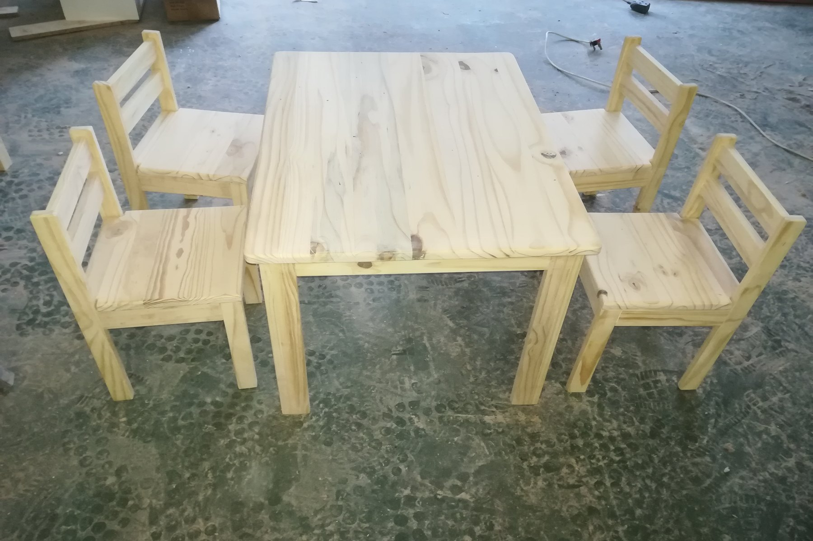
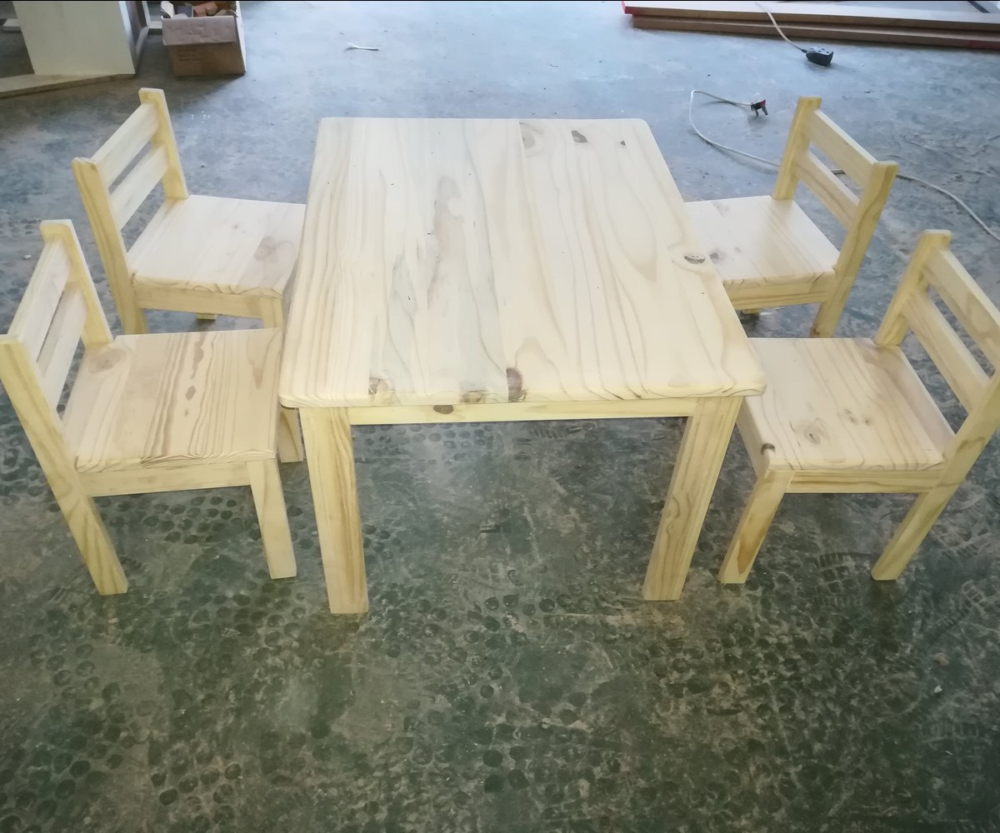

About 2G Custom Furniture
Practical Furniture, Carefully Made Since 2016.
2G Custom Furniture is a hands-on woodworking and furniture business serving homes and workspaces throughout KwaZulu-Natal.
Our Story
Built Around Craftsmanship, Service, and Useful Design.
Since 2016, 2G Custom Furniture has been helping clients improve their spaces with practical, well-made cupboards, furniture, repairs, and interior woodwork.
We believe good furniture should do more than fill a room. It should make the space easier to use, better organised, and more enjoyable to live or work in. That is why every project begins with understanding the space, the purpose, the budget, and the people who will use it every day.
From kitchens and bedrooms to studies, TV rooms, vanities, custom pieces, repairs, and additions, our work is built with a simple focus: make it useful, make it beautiful, and make it properly.

Our Values
Passion. Integrity. Quality.
These values are not decoration under a logo. They are how the work should feel from the first conversation to the final fitment.
Passion
For the craft, the detail, and the spaces people live in every day.
Integrity
Clear communication, honest recommendations, and work we are proud to stand behind.
Quality
Furniture made with care, fitted properly, and built for real daily use.

From Workshop to Installation
A Hands-On Process From Start to Finish.
With a fully equipped workshop, 2G Custom Furniture manages the process from measuring and cutting to assembly, finishing, and fitment.
This hands-on approach helps keep projects practical, consistent, and carefully finished. Whether we are building a single custom item or fitting a full cupboard installation, we keep the details close — because the small things are what make the finished piece feel right.
What Sets Us Apart
Not Just Made to Fit. Made to Work.
A good result is not only about how the furniture looks on installation day. It is about how well it performs months and years later.
Fully Equipped Workshop
We manufacture in-house, giving us better control over quality, finish, and consistency.
Made-to-Measure Work
Each project is built around the space, not forced into it.
Practical Recommendations
We help clients choose materials, finishes, and layouts that make sense.
Repairs & Additions
We can improve, extend, or refresh existing cupboards and furniture.
KZN-Wide Service
We serve homes and workspaces throughout KwaZulu-Natal.
Where We Work
Serving Homes and Workspaces Across KwaZulu-Natal.
Based in KZN, 2G Custom Furniture assists clients across the province with custom cupboards, furniture, repairs, refurbishments, and interior installations.
If you have a space that needs better storage, a cleaner finish, or a custom-built solution, we’ll help you figure out the most practical way forward.
Replace this with a custom KZN map graphic or Google Maps embed if desired.